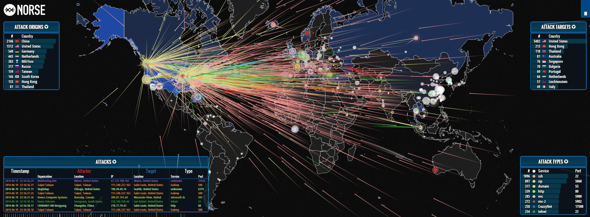
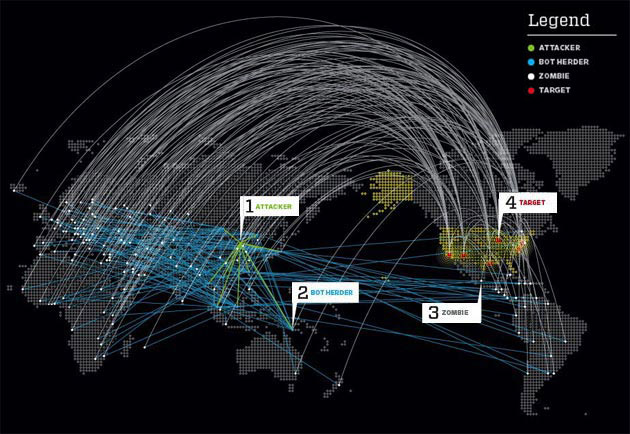
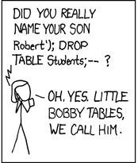

Hacking Ethico
For fun and Profit!?
Whoami
Marcelo Alaniz
Hacker?
Profesor
Arquitecto de Software
Desarrollador
Fun?
Profit
Hackers
hacker 1:
Apasionados por la seguridad informática.
Entradas remotas no autorizadas por medio de ....
Gente que depura y arreglan errores de sistemas
hacker 2:
Aquellos que son apasionados por saber que pasa dentro de sus computadoras. Ya sean programas cerrados o no. Tambien aplicado a las telecomunicaciones
hacker 3:
Una comunicad de entusiastas programadores y diseñadores de sistemas originada en los sesenta alrededor del MIT. Esta comunidad se caracteriza por el lanzamiento del movimiento del software libre.
...
hacker n:
No sabemos bien que es o no es un hacker.
Hacker (RAE):
hacker == pirata informático.
"El diablo quiere hacernos creer que no existe"
by NSA?
Los hackers existen!
Para bien o para mal
¿Que es ético?
Informatica && bugs
Cumplir la Ley?
Encontrar una vulnerabilidad
y no explotarla?
Avisar!!
Encontrar una vulnerabilidad
explotarla
El responsable aprende de la mala experiencia
Porque
es importante
saber que es y que hace un hacker.
Seguridad
Posturas
para atacar la
inseguridad informatica
Tratar de adivinar que hace un hacker,
de acuerdo a esta hipótesis proteger
la información (y su transmisión)
Saber que hace un hacker,
para luego usarlo en su contra.
O en todo caso, saber protegerse.
Historia
- Desde la lucha por territorios
- Turing (máquina enigma)
- Kevin Mitnick
- Master of Deceptions
- Anonymous ?
Ethical Hacker
¿Que hace?
- Audita sistemas
- Audita redes
- Audita empresas
- Audita personas
¿Como lo hace?
- Ataca
- Vulnera
- Informa
Tester
con anfetaminas
EH
- Técnicas de hacking
- Está inmerso en el "underground"
- Ética? contrato ...
Objetivos
- Recursos en Redes
- Sistemas operativos
- Aplicaciones
- Código Shrink-wrap - Software Empaquetado
- Errores de configuración
Terminología
- Vulnerabilidad
- Amenaza
- Riesgo
- Exposición
- Contramedida
- Exploit
- Ataque
Metodología
- Reconocimiento
- Escaneo
- Acceso
- Mantenimiento de acceso
- Eliminación de rastros
Reconocimiento
Ataques de arista (indetectables)
- Google Fu
- Shodan
- Crawlers mas especificos
Escaneo
Objetivo: maquinas obtenidas a partir del reconocimiento
- Detectar bugs en maquinas objectivo
- Servicios de red funcionales
- Sistema operativo
- Riesgo: ataque a servidor directo (detectable)
Ataque o Acceso
Objetivo: Conseguir concretar el ataque al recurso establecido
El 90% de las veces significa encontrar el exploit que aprovecha una vulnerabilidad
DOS && DDOS
DDOS (Botnet)
SQLi
Buffer Overflow
Metadatos
Ingenieria Social
- Todos queremos ayudar.
- El primer movimiento es siempre de confianza hacia el otro.
- No nos gusta decir No.
- A todos nos gusta que nos alaben.
Ingenieria Social
Pishing
Mantener
accesos
(Backdoors)
Una manera de acceder a una computadora o recurso a travez de metodos alternativos. Suele instalarse por virus o programas en concreto
Cubrir huellas
(rootkits)
Es un software que se instala para que no se muestren los procesos malignos instalados en la máquina o servidor
Conclusiones
Existen herramientas automatizadas para el 90% del proceso
Pero siempre se necesita de hackers improvisar
Lo nombrado es solo el 20% de los ataques
Los hackers de verdad aun no los conocemos
Conceptos nuevos
Bitcoin
Criptomonedas
DeepWeb
- Level 1 – Web: Normal
- Level 1 – Surface Web: Links especiales en Reddit
- Level 2 – Bergie Web: Igual al surface pero no son sitios crawleables
- Level 3 – Deep Web: usando TOR (sitios onion)
- Level 4 – Charter Web: hardware especial o TOR con certificados especiales
- Level 5 – Mariana's Web: Poco conocido.
Cyberguerra
en la guerra y el amor todo se vale
Sin ética
Guerras tradicionales: Entre estados
Cyberguerra: estados vs hacktivistas
Cyberguerra: hacktivistas vs empresas
Curiosidades
Algoritmos de encriptación en USA estan regulados por la ITAR
ITAR: Reguladora de tráfico de Armas.
Curiosidades
Algoritmos de encriptación en USA estan regulados por la ITAR
ITAR: Reguladora de tráfico de Armas.
PGP y 3Des fueron considerados en la escala de armas de igual prioridad que la bomba de nitrogeno
Curiosidades
EEUU, China y Rusia son los estados que declaran una inversión MultiBillonaria en equipos de hacking (no de seguridad informatica), los demas paises no se animan a declarar incluso algunos a crearlos.
EEUU, China y Rusia, han realizados demostraciones de poder (sin daños colaterales)